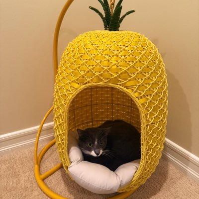

索瑟尔 𝓢𝓸𝓻𝓬𝓮𝓻𝓮𝓻🍥🏳️⚧️
@Sorcerer198964
@Louistesla93 @Starlink 低音噪声，潮湿环境你是一点不提

Louis
@Louistesla93
🏝️ 孤岛灯塔守护员：以前彻底隔绝、无人愿干！
现在 @Starlink 卫星覆盖后，数字游民梦中情职！
包海景房 + 高速卫星网，远程办公不耽误！
省住宿+社交成本，还多赚7万美元/年💰
这工作突然香爆了！你敢去驻守吗？评论区告诉我！🔥
#Starlink #数字游民 #灯塔生活
https://t.co/12j3YVmLNG